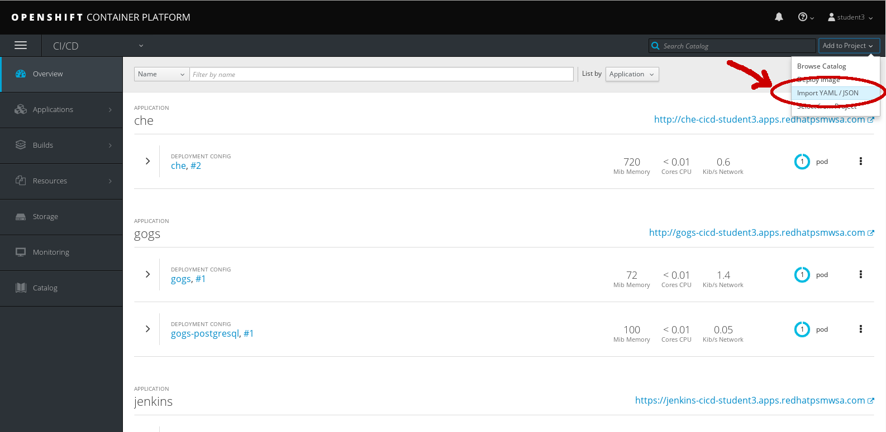

Today, you will be building your Trusted Software Supply Chain using a Jenkins Pipeline that is integrated with OpenShift.
In addition to standard Jenkins Pipeline Syntax, the OpenShift Jenkins image provides the OpenShift Domain Specific Language (DSL) (through the OpenShift Jenkins Client Plug-in), which aims to provide a readable, concise, comprehensive, and fluent syntax for rich interactions with an OpenShift API server, allowing for even more control over the build, deployment, and promotion of applications on your OpenShift cluster.
Please refer to the OpenShift Jenkins Pipelin(DSL) Plugin examples documentation for more info.
First, we will need to create a BuildConfig that employs the Pipeline Build strategy for our Trusted Software Supply Chain. In the OpenShift Console, we’ll do this by clicking “Add to Project”, “Import YAML / JSON” while using the CI/CD project.

Then copy & paste the following into the YAML/JSON input text field and click Create,
apiVersion: v1
kind: BuildConfig
metadata:
annotations:
pipeline.alpha.openshift.io/uses: '[{"name": "jenkins", "namespace": "", "kind": "DeploymentConfig"}]'
labels:
app: cicd-pipeline
name: cicd-pipeline
name: tasks-pipeline
spec:
triggers:
- type: GitHub
github:
secret: "secret101"
- type: Generic
generic:
secret: "secret101"
runPolicy: Serial
source:
type: None
strategy:
jenkinsPipelineStrategy:
env:
- name: DEV_PROJECT
value: dev-<user>
- name: STAGE_PROJECT
value: stage-<user>
jenkinsfile: |-
def version, mvnCmd = "mvn -s configuration/cicd-settings-nexus3.xml"
pipeline {
agent {
label 'maven'
}
Close the window once it's imported.
Then go to “Builds” → “Pipelines” tab.
Verify that you see your "tasks pipeline" that you just imported.
Click on the “tasks-pipeline”
Click Actions -> Edit YAML
Update your user Dev and Stage projects to make sure reflects your user #.
strategy:
jenkinsPipelineStrategy:
env:
- name: DEV_PROJECT
value: dev-<user>
- name: STAGE_PROJECT
value: stage-<user>
Also, notice that we will be launching a Maven node/agent to execute our pipeline.
You will also be declaring variables such as version and mvnCmd to be used later in the pipeline.
The .xml file refers to maven configurations for your application. The reference to this .xml file from our pipeline can be seen here:
jenkinsfile: |-
def version, mvnCmd = "mvn -s configuration/cicd-settings-nexus3.xml"
pipeline {
agent {
label 'maven'
}
Click Save